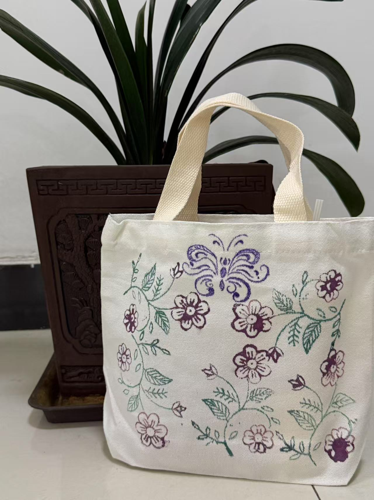
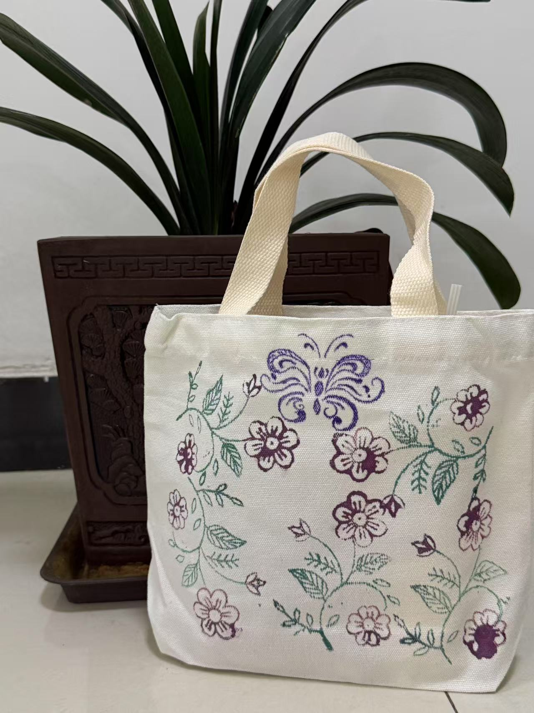
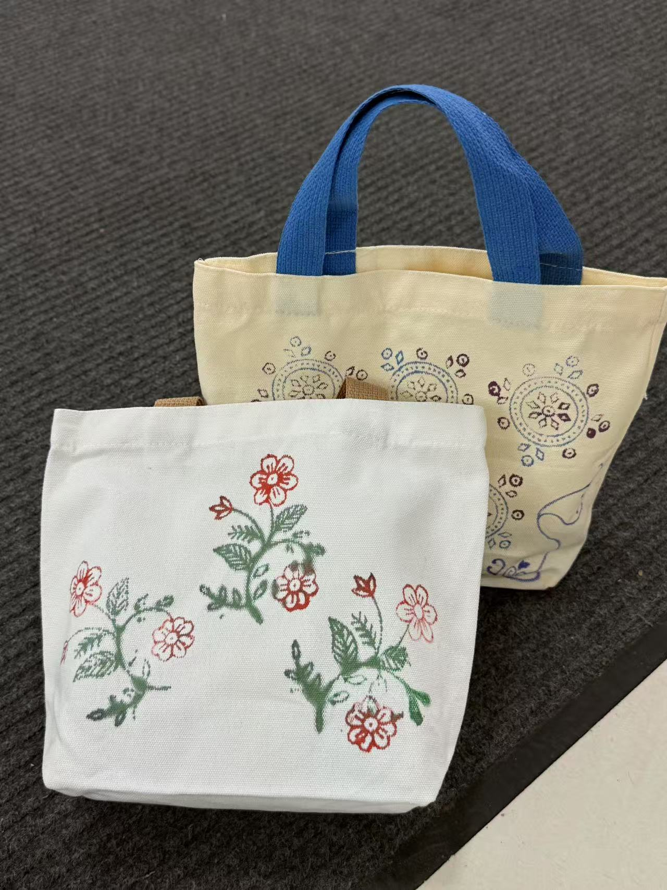
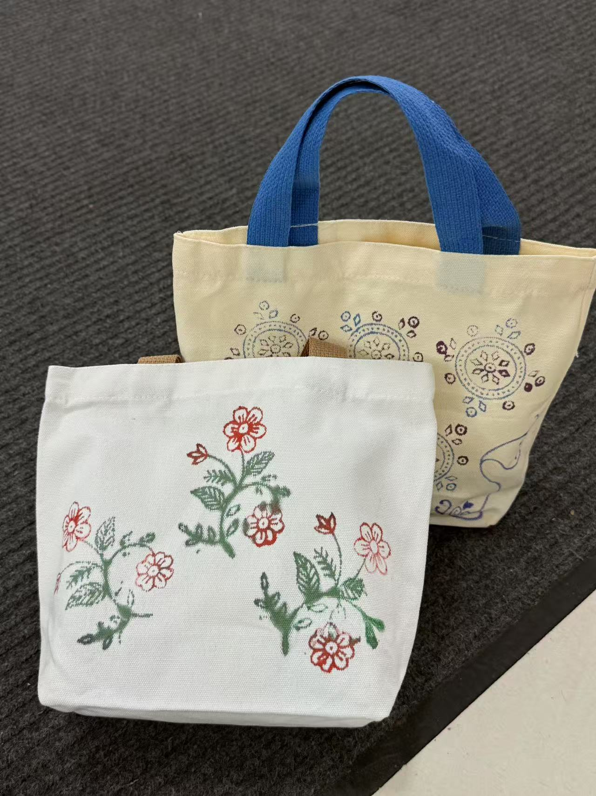
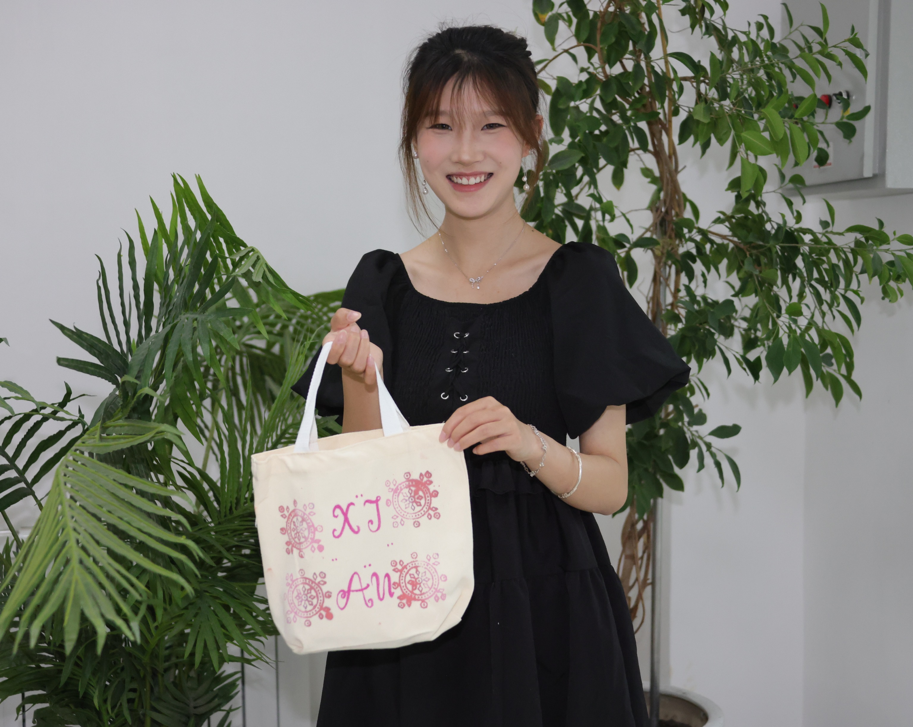
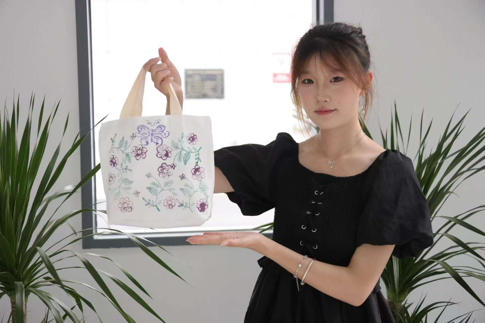
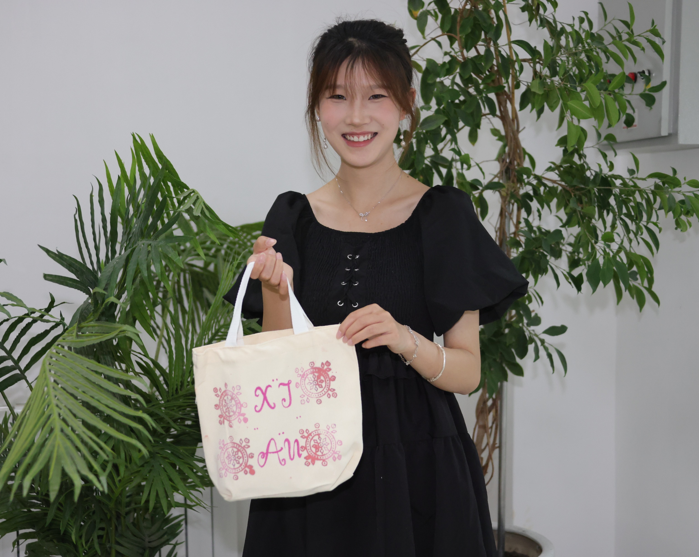
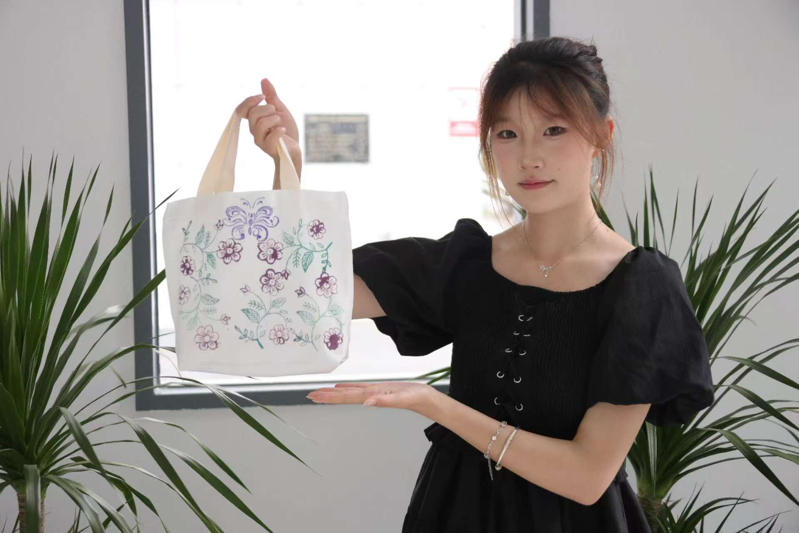

团队木模戳印花自制品
我们精心打造了一系列融合传统与美感的模印文创好物：帆布包、印章…… 每一件都源自非遗工艺——木模戳印花，图案取材自自然万象与民族符号，纹理古朴典雅，质感独一无二。 📦 限量上架，在“关于我们”提供微信公众号扫码即购，可以定制哦
📦 限量上架，在“关于我们”提供微信公众号扫码即购，可以定制哦
🔶 工艺溯源： 木模戳印源于古老的民族布艺印染技法，传统用于节庆礼服、宗教仪式与生活装饰，如今将其工艺凝缩于手持印章之中，复刻原始纹路与雕刻技艺。
🪵 材质选择： 精选樟木 / 黄花梨等耐久木材，手工雕刻，保留天然木纹，每枚都独一无二。
🌸 纹样寓意： 图案涵盖花草鸟兽、吉祥符号、民族图腾，既有艺术美感，也承载美好寓意与祝福。
🖋 使用方式： 搭配颜料或印泥，可拓印于布包、书签、卡片、手账本、文创纸品等，适合DIY、礼品制作与文艺创作。
🎁 推荐用途： 非遗纪念、个性印签、文化衍生礼品、手工活动体验道具。
我们精心打造了一系列融合传统与美感的模印文创好物：帆布包、印章…… 每一件都源自非遗工艺——木模戳印花，图案取材自自然万象与民族符号，纹理古朴典雅，质感独一无二。 📦 限量上架，在“关于我们”提供微信公众号扫码即购，可以定制哦
📦 限量上架，在“关于我们”提供微信公众号扫码即购，可以定制哦
👕 图案灵感： 精选传统花草纹样、民族符号与几何图腾，采用木模拓印方式手工压印，图案立体饱满，纹理自然流畅，展现东方美学的含蓄与灵动。
👜 包型设计： 极简托特结构，容量充足，轻便耐用，适合日常通勤、出行携带、文创集市、展会场合等。
🌿 材质选择： 采用高克重纯棉帆布，耐磨环保，手感挺括，兼具实用性与质感。
🎁 推荐用途： 可作为手作礼品、艺术衍生品、亲子DIY载体或文化纪念品收藏。
 

 


 


